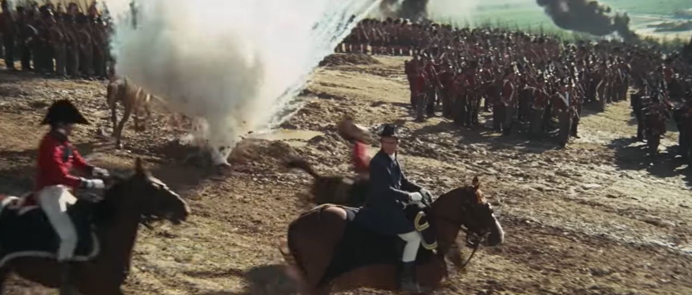
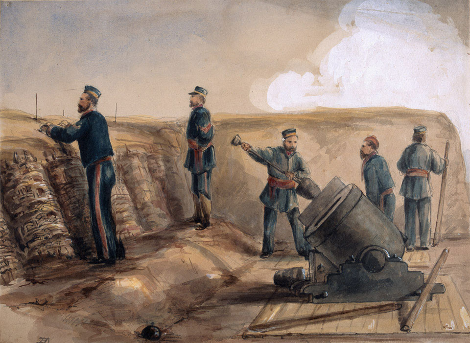
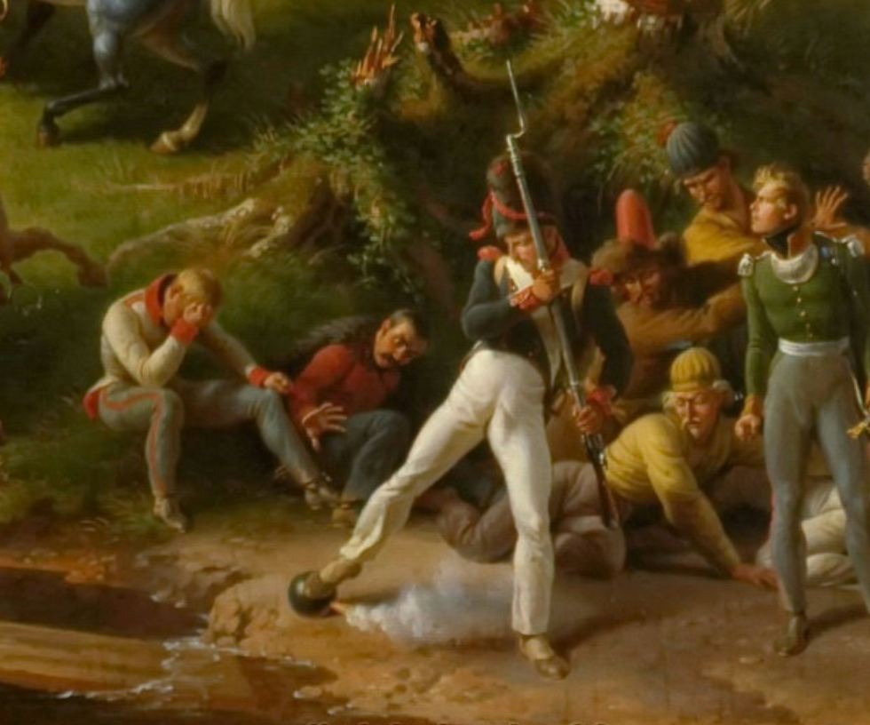
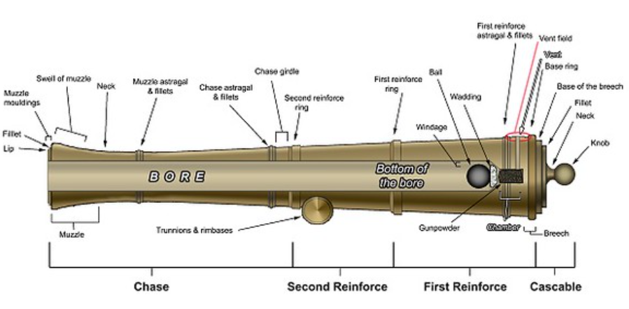
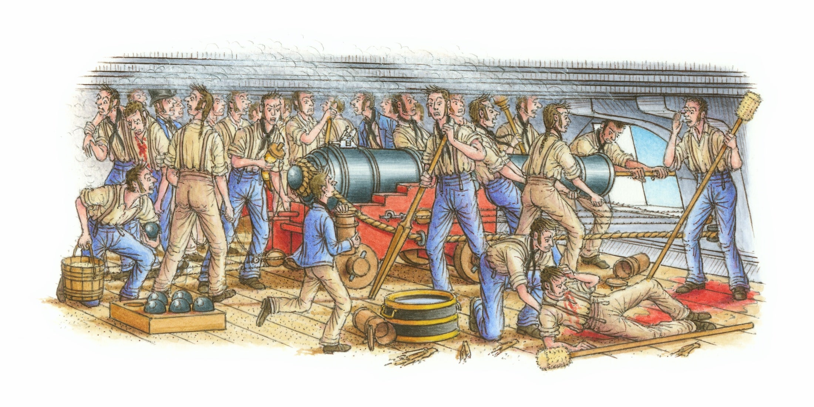
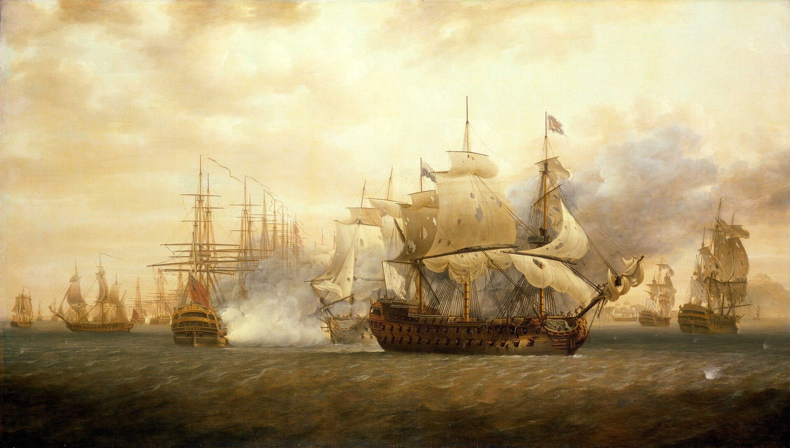
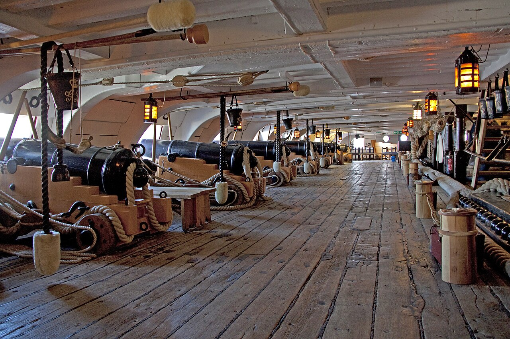

보스포러스 해협 이야기 (4) - 쇠구슬과 폭탄
게시: 2026-02-26T06:30:13+09:00
17~18세기의 전투 장면을 묘사한 영화를 보면, 흔히 대포알이 명중할 때 폭발하는 모습으로 묘사됩니다. 이건 맞을 수도 있고 틀릴 수도 있는 장면입니다. 당시 대포(cannon)는 대개 그냥 커다란 쇠구슬 같은 대포알(cannonball)을 쏘았지만, 박격포(mortar)는 속에 흑색화약이 든 폭발탄(shell, bomb)을 쏘기도 했기 때문입니다. 박격포는 포신이 매우 짧고 폭탄을 하늘 높이 던져올리는 형태로 포구가 45도 이상 하늘을 향해 있었기 때문에, 바퀴가 달린 포가 위에 얹은 상태로 쏘면 그 반동으로 인해 바퀴 축이 부러질 수 밖에 없었습니다. 그래서 박격포는 대개 땅에 고정시켜놓고 쏘았고, 기동성이 전혀 없었습니다. 그러다보니 박격포는 야전보다는 공성전에서나 사용되는 경우가 많았습니다. 야전에서는 박격포와 대포의 중간 형태인 곡사포(howitzer)가 폭발탄을 쏘기도 했으므로, 보병들도 폭발탄을 경험할 기회가 꽤 있었습니다.

(이 영화는 1970년 개봉된 명작 Waterloo 입니다. 크리스토퍼 플럼머가 웰링턴으로, 로드 슈타이거가 나폴레옹으로 나왔습니다. 저 영화는 우크라이나에서 촬영 되었기 때문에, 동원된 1만7천의 엑스트라들은 소련군 현역 병사들이었습니다. 그래서 당시 농담으로 저 영화의 감독인 본다르축(Sergei Bondarchuk)이 세계에서 7번째로 큰 군대를 보유하고 있다고 했습니다. 저 영화에서도 저렇게 대포알이 땅에 떨어질 때 폭발하는 것으로 묘사되었는데, 잘못된 것입니다. 그러나 영화는 재미로 봐야지 고증하겠답시고 영화 보는 내내 옆사람에게 '저건 틀렸어, 저건 이런이런 이유로 맞지 않아'라고 지껄이면 친구들이건 애인이건 다 떨어져 나가는 법입니다. 영화에서 대포알이 떨어졌는데 그냥 흙만 한 무더기 툭 튀기고 만다면 관객들이 실망하지 않겠습니까?)

(이 그림은 1855년 크림 전쟁에서 세바스토폴을 포위한 영국군이 사용하던 13인치 박격포입니다.) 그러나 해전에서는 폭발탄이 사용될 일이 전혀 없었습니다. 그 이유를 이해하려면, 왜 당시엔 폭발탄을 박격포에서만 쏠 뿐 대포에서는 못 쏘았는지를 아셔야 합니다. 당시엔 충격 신관이라는 것이 없었으므로, 폭발탄의 장약이 폭발하기 위해서는 대포를 쏘기 전에 폭발탄의 도화선에 불을 미리 붙여주어야 했습니다. 그런데 당시의 대포는 대포알이 (실제로는 매우 완만한 포물선이지만) 수평으로 날아가도록 쏘는 직사포로서, 직사포는 특성상 포탄의 속도가 매우 빠르고 발사부터 명중 때까지의 시간도 매우 짧습니다. 그러다보니 발사될 때의 폭풍, 또는 비행 도중의 바람으로 인해서 도화선의 불이 꺼져버리는 경우가 많았습니다. 또 폭발탄이 제 위력을 내기 위해서는 폭발탄이 목표물에 명중하기 직전 혹은 직후에 딱 맞춰 폭발하도록 폭발탄의 도화선 길이를 잘 조절해야 했습니다. 만약 너무 짧으면 목표물에서 먼 공중에서 폭발해버렸고, 너무 길면 땅 위에 떨어진 뒤에 적군이 그 도화선을 발로 짓밟아 폭발을 막아 버렸기 때문입니다. 당연히, 그 거리 조절은 전혀 쉽지 않았습니다.

(이 그림은 1812년 보로디노 전투를 묘사한 르죈(Louis Lejeune)의 작품 중 오른쪽 하단 부분만 확대한 것입니다. 프랑스 병사 하나가 자기 앞에 떨어진 폭발탄을 발로 굴려 그 불 붙은 도화선을 끄려고 시도하고 있습니다. 그 앞에 주저앉은 사람들은 러시아군 포로들인데, 그 중 하나가 겁에 질린 눈으로 그 폭탄을 보고 있습니다. 폭탄의 도화선이 타들어간 정도를 보니, 과연 저 진화 시도가 성공했을지 저도 궁금합니다. 아슬아슬 하네요.) 그 외에도 문제가 있었습니다. 당시 기술력으로는 대포의 포강 직경은 대포알의 직경보다는 약간 더 크게 (0.5~08.cm 정도) 만들어야 했습니다. 당시 기술력으로는 대포알 자체를 완벽한 구체로 만들 수도 없었고, 포구로 대포알을 밀어넣어 장전하는 전장식 포의 특성상 포구 직경과 대포알의 직경이 완전히 일치하면 장전 자체가 너무 어려웠기 때문입니다. 당시 포에 당연히 있던 그런 포강과 대포알 사이의 직경 차이를 유극(windage)라고 불렀습니다. 이런 유극은 쇳덩어리 그 자체인 구형탄(roundshot)에는 별 문제가 없었으나, 폭발탄에는 문제가 되었습니다. 폭발탄은 속에 화약을 쟁여넣어야 했으므로 속이 텅 비어야 했고, 폭발력이 비교적 약한 흑색화약의 폭발로도 외피가 찢어지며 파편이 만들어지려면 폭발탄의 외피는 적당히 얇아야 했습니다. 즉, 속이 빈 폭발탄 자체의 강도는 그다지 좋지 않았습니다. 그런데 폭발탄이 발사되어 포구를 벗어날 때까지, 유극이 있다보니 포신이 긴 대포의 포강 내에서 폭발탄은 포강에 이리저리 부딪혀야 했습니다. 그 과정에서 강도가 약한 폭발탄 외피가 갈라져 버리는 경우가 가끔 있었습니다. 뜨거운 화염이 쏟아져 나오는 포강 내에서 폭발탄 외피가 갈라지면 속에 든 흑색 화약이 유폭을 일으켜 큰 사고가 일어날 수 있었습니다.

(당시 대포의 구조입니다. 대포알과 포강 벽면의 약간의 갭을 유극(windage)이라고 부릅니다. 저런 유극을 통해서 흑색 화약의 폭발 가스가 새어나오니까 원칙적으로는 유극이 적을 수록 대포의 위력이 좋아집니다.) 그런 폭발탄을 제대로 쓰려면 포탄 속도가 느리고, 비행 시간이 길어야 했으며, 포신도 짧아야 했습니다. 그런 특성을 가진 화포가 바로 박격포였습니다. 박격포는 주로 적의 보루나 요새 안에 폭발탄을 던져 넣기 위해 45도 이상의 앙각으로 하늘을 향해 쏘는 화포였고, 그 탄도는 커다란 포물선을 그렸습니다. 그러다보니 당연히 폭발탄의 비행 속도도 느렸고, 따라서 비행 시간도 길었습니다. 그래서 폭발탄의 도화선 길이 조절도 쉬웠고, 또 도화선의 불이 꺼지는 경우도 드물었습니다. 박격포는 특성상 포신이 매우 짧았으므로 유극으로 인해 포강과 부딪혀 외피가 갈라지는 일도 없었습니다. 문제는 그렇게 느린 속도로 포물선을 그리며 날아가는 폭발탄으로는 고정된 요새의 넓은 안마당 어딘가를 맞추기는 쉬웠으나, 움직이는 군함에서 쏘아 역시 움직이는 적함을 맞추는 것이 사실상 불가능했다는 점입니다. 문제는 그것 하나만이 아니었습니다. 좁은 군함의 포갑판에서 포탄을 장전하고 조준하고 발사하는 과정은 매우 힘들고 혼란스러운 작업이었는데, 적의 포탄이 날카로운 나무 파편들과 함께 그 좁은 포갑판을 휩쓸고 가는 일이 꽤 자주 있었습니다. 그런 난장판 속에서 도화선에 불을 붙인 폭발탄을 다루는 것은 매우 위험한 일이었습니다. 그러다보니 군함에서 폭발탄을 쏘는 것은 박격포함(bomb ketch)라는 특수한 군함에서만 수행했고, 그 목표물도 대개 적함이 아니라 적의 해안 요새를 향해 쏘는 것이 전부였습니다.

(교전 중인 군함의 포갑판은 완전 아수라장이었습니다. 저 와중에 도화선에 불을 붙인 폭발탄을 장전하려던 수병이 적 포탄에 얻어맞고 쓰러진다면 그건 대참사로 이어질 수 밖에 없는데, 문제는 그런 일이 벌어질 확률이 매우 높았다는 점입니다.) 하지만 나무로 만들어진 전열함에 대고 대포알(roundshot)을 쏘아대는 것은 너무나 비효율적이었습니다. 당시 전열함에 탑재하는 가장 큰 대포는 32파운드 포였는데, 그래 봐야 직경 15.5cm의 쇠구슬을 쏘는 것이었으니 아무리 많이 명중시켜도 함체에 구멍만 뽕뽕 낼 뿐 적함은 쉽게 파괴되지 않았습니다. 그런 점은 무조건 커다란 전열함을 가진 쪽을 더욱 유리하게 만들었습니다. 당시 전열함의 측면은 약 60cm~90cm 정도의 두꺼운 떡갈나무로 만들어졌는데, 그렇게 두꺼운 목판은 작은 프리깃함에 장착된 18파운드 포, 즉 직경 약 13cm의 대포알로는 매우 가까운 거리가 아니고서는 뚫을 수가 없었습니다. 그러니 커다란 24파운드 포나 32파운드 포를 잔뜩 장착한 군함이 필요했고, 그러자면 거대한 전열함(ship of the line)이 있어야 했습니다.

(이 그림은 미국 독립전쟁 중인 1782년 카리브해에서 벌어진 세인트 키츠(Saint Kitts) 해전을 그린 것으로서, 맨 앞에 그려진 것은 80문짜리 프랑스 전열함인 생-에스프리(Saint-Esprit)입니다. 영국 함대는 전열함 22척, 프랑스 함대는 전열함 29척에 프리깃함 2척이 있었는데도... 영국 함대의 근소한 우세로 전투가 끝났습니다. 아무튼 이렇게 프랑스가 막대한 전비를 써가며 지원해주었기에 미국이 독립할 수 있었던 것입니다.) 그런 점은 아무래도 영국에게 유리했습니다. 영국은 섬나라이다보니 해군력에 국력을 집중시킬 수 있어서 많은 수의 전열함을 갖출 수 있었습니다. 나폴레옹의 그랑다르메(Grande Armee)의 특징은 보병 기병 포병을 하나의 독립 단위로 편성한 군단(corps)이었는데, 2~3만 병력 1개 군단의 포병대가 갖춘 대포가 8~12파운드 포 40문 정도였습니다. 그에 비해 표준 전열함 하나는 24~32파운드 포 74문을 가지고 있었으니, 확실히 육군에 비해 해군이 돈이 많이 들어갔던 것입니다. 그러다보니 영국에 비해 프랑스는 아무래도 전열함 수가 영국보다는 적을 수 밖에 없었습니다.

(넬슨 제독의 기함 HMS Victory의 제1 포갑판의 모습입니다. 저기 보이는 함포들은 모두 32파운드 포로서, 양현에 15문씩, 모두 30문이 장착되어 있습니다. 그 위의 제2 포갑판에는 24파운드 포가 총 28문 장착되어 있고, 또 그 위의 제3 포갑판에는 18파운드 포 30문이 장착되어 있습니다. 그 외에도 후갑판(quarterdeck)에 12파운드 포 12문, 그리고 앞갑판(forecastle)에 12파운드 포 2문과 케로네이드(carronade) 포 2문, 이렇게 총 104문을 갖추고 있습니다.) 이렇게 물량면에서 불리했던 프랑스 해군은 기술 혁신을 통해서 영국 해군에 맞서 보려 노력했습니다. 그 노력 중 하나가 군함에서도 폭발탄을 어떻게든 써보자는 것이었습니다. 1795년부터 시작된 프랑스 해군의 폭발탄 사용에 대한 실험은 결국 뾰족한 결과물을 내지 못한 채 마무리 되고 말았습니다. 가장 어려운 부분은 역시나 도화선을 어떻게 할 것이냐 하는 것과, 또 도화선에 불을 붙인 폭발탄을 군함 포갑판에서 어떻게 안전하게 다룰 수 있냐는 것이었습니다. 나폴레옹으로부터 냉대를 받던 프랑스 해군은 이 문제를 결국 해결 못했지만, 당시 프랑스에서 똑똑한 인간들이 다 모인다는 프랑스 육군 포병대에는 이 문제를 포기하지 않고 매달린 사람이 있었습니다. 앙리-조제프 펙상(Henri-Joseph Paixhans)이라는 이름의 포병 장교였습니다. 이 펙상의 연구는 결국 프랑스가 아니라 러시아에게 빛나는 승리를 안겨주게 됩니다.